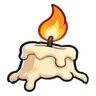

แมลงปอไพลิน · ร่างสายรุ้ง
มอนธาตุลม Lv 28–34
เจอที่
| แมพ | โซน | Lv | ภูมิภาค |
|---|---|---|---|
| น้ำตกหิ่งห้อย | 28–34 | ป่ากองไฟ | |
| น้ำตกหิ่งห้อย | แอ่งน้ำตก | 33–34 | ป่ากองไฟ |
| น้ำตกขั้นบันได | 28–34 | ป่ากองไฟ | |
| น้ำตกขั้นบันได | ขั้นบันไดน้ำตก | 33–34 | ป่ากองไฟ |
| ถ้ำหลังม่านน้ำ | 28–34 | ป่ากองไฟ | |
| ถ้ำหลังม่านน้ำ | ม่านน้ำตกใหญ่ | 33–34 | ป่ากองไฟ |
| ยอดน้ำตกหมอกลอย | 28–34 | ป่ากองไฟ | |
| ยอดน้ำตกหมอกลอย | กองหินบนขอบผา | 33–34 | ป่ากองไฟ |
ค่าสถานะตามเลเวล
| Lv | HP | ATK | DEF | MDEF | EXP | Job |
|---|---|---|---|---|---|---|
| 28 | 3,056 | 52–78 | 7 | 6 | 69 | 52 |
| 31 | 3,798 | 59–89 | 7 | 7 | 75 | 56 |
| 34 | 4,824 | 68–102 | 8 | 7 | 81 | 61 |
ตีด้วยธาตุไหนดี
แรงขึ้น: ดิน ×1.5 พิษ ×1.25
เบาลง: น้ำ ×0.5 ลม ×0.25
วัตถุดิบที่ดรอป
| ของ | โอกาส | |
|---|---|---|
| ปีกแมลงปอใส | 82.5% | 1 ชิ้น (15% ได้ 2) |
อุปกรณ์ที่ดรอป (3)
| ของ | โอกาส |
|---|---|
| 0.25% | |
| 0.12% | |
 หมวกเทียนละลาย | 0.08% |
สกิล
หลบ (Lv 25+) · หลบ (Lv 60+) · วาร์ป (Lv 60+)